Roadbar Evo TLO
シュモルケの基準となるカーボンドロップハンドル。1KまたはUDの織り、3つのロゴエディション、内装ケーブルとTTクリップオン補強をオプションで選べます。
- Weight
- 130 ~ 150g
- Width
- 400 / 420 / 440mm
- Reach
- 73 / 78mm
- Drop
- 125 / 126mm
01
Brand
Schmolke CarbonKonstanz · Since 1992
シュモルケ・カーボンは1992年、南ドイツのボーデン湖畔の街コンスタンツで、機械工学エンジニアのシュテファン・シュモルケ（Stefan Schmolke）が設立したカーボンコンポーネントの会社です。幼い頃から兄マティアスとレースに出ていた彼は、大学卒業を控えた1989年に兄とハイエンドパーツの店を開き、同じ年に卒業論文としてカーボン製レーシングハンドルバーの理論を書きました。
翌年には実際に乗れるカーボンハンドルバーを作り、注文が生産能力を超えたため1992年に会社を設立しました。2001年、ヤン・ウルリッヒ（Jan Ullrich）はシュモルケのハンドルバーでツール・ド・フランス総合2位に入りました。30年以上たった今も、シュモルケは量より質を、組立ラインより手作業を選ぶやり方を守っています。

TLO · The Lightest One
TLOはThe Lightest One、最も軽いものという意味で、シュモルケの最上位ラインです。シュモルケはパーツにかかる力をまずコンピューターで解析し、荷重が集中する部分には最大23層、負荷の少ない部分には7層とプリプレグの積層を変えます。肉厚が一定の一般的なパーツと違い、必要な場所にだけ素材を置くため、軽くて強いのです。
表面は塗装しません。マットなエポキシ仕上げは塗装より傷に強く、余計な重さを加えません。織物のような1Kと繊維が一方向に流れるUDの2種類の表情から選び、レッドとホワイトのロゴのシュモルケエディション、ブラックエディション、ホワイトエディションで仕上げます。

卒業論文から生まれた最初のカーボンロードハンドルバー。シュモルケのすべての製品は、この1本から始まりました。

プリプレグを手で1層ずつ巻いて作ります。力の通り道に合わせて層の数と向きを変えます。

塗装の代わりにマットなエポキシ。カーボンの織り目がそのまま見え、塗装の重さや傷の心配もありません。
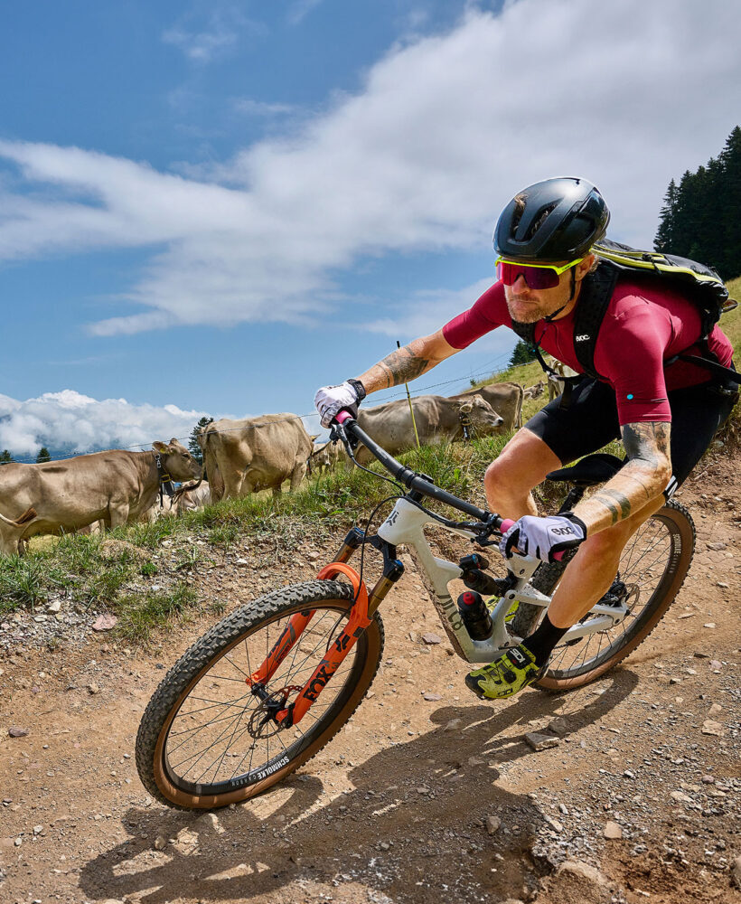
ロード、グラベル、MTB、フォールディングバイクまで。同じ基準でハンドルバー、シートポスト、サドル、ホイールを作ります。

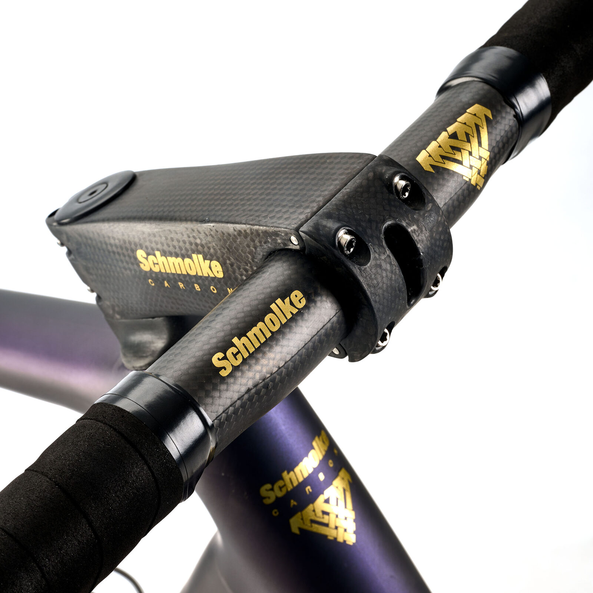
Founder · Stefan Schmolke
「不可能なことはない。」
シュテファン・シュモルケは学生時代、自転車技術の第一人者ハンス＝クリスティアン・スモリク（Hans-Christian Smolik）の指導でカーボンハンドルバーを研究し、卒業後は設計事務所と航空宇宙企業EADSで働きました。今もシュモルケのカーボンパーツの多くを自ら開発、または開発を率いています。
2020年からは同じドイツのカーボンコンポーネントメーカーTHMと歩みをともにしています。シュモルケのレッジェリッシマ（Leggerissima）TLOは、THMクラビクラ・クランクにシュモルケのコックピット、シートポスト、サドル、ホイールを組み合わせ、完成車5.4kgを実現しました。
Stefan Schmolke, FounderSchmolke Carbon
The Range
ハンドルバーからボトルケージまで、同じ原則で作ったシュモルケの主力パーツ。
最大17層のプリプレグを手巻きしたエルゴドロップハンドル。内装ケーブルはオプション。
ハンドルバーとステムをひとつにし、ケーブルを完全に隠した一体型コックピット。
6°フレアで低すぎないエアロポジションを作る一体型コックピット。
繊維がアルミインサートを完全に包み込むループ構造のカーボンステム。
最大23層の積層で、前後にはしなやかに、左右にはしっかりしたシートポスト。
シェル、フレーム、レールまで一体のカーボンで作ったサドル。
ロード、グラベル、クロスカントリーまで使える幅130mmの3Kカーボンサドル。
24本のカーボンスポークで組んだ37mmチューブレスディスクホイール。
1kgを超えない50mmエアロディスクホイール。
1本2.2gのテキスタイルスポークで組んだグラベルホイール。
ブロンプトンTラインのための15mmライズのカーボンローライザー。
500mlと750mlのボトルに対応する100%カーボンのボトルケージ。
02
Cockpit
Roadbar · Cockpit · StemHand-wound, unpainted
シュモルケの出発点がハンドルバーだったように、コックピットは最も長く磨き上げてきた分野です。ロードバー・エボTLOは、荷重が集中する中央に最大17層、下側のカーブに5層のプリプレグを手巻きし、130g台で高い剛性を出します。手が自然に収まるカーブ、両端を10mmずつカットできる余裕、選べる内装ケーブル穴も備えています。
2026年にはハンドルバーとステムをひとつにしたロードバー・コックピットTLOとコックピット・エアロTLOを発表しました。ケーブルをハンドルバーとステムの中に完全に隠し、トップを平らにして手のひらが広く当たるようにしました。

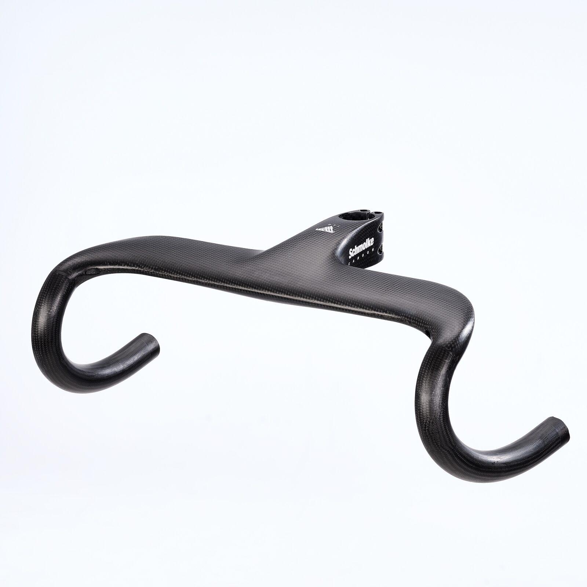
中央は最大17層、下側カーブは5層。力が集中する場所とそうでない場所で層の数を変え、重さを削りました。
アルミナットを半円形のプレートで支えるのではなく、カーボン繊維がインサートを完全に包み込みます。低トルクでも音鳴りがありません。
コックピットはケーブルを完全に隠し、エボTLOとTLOステムも内装ケーブル穴を選べます。増える重量は約4gです。
これほど軽くても、シュモルケのハンドルバー、ステム、コックピットは最大110kgまで試験と承認を経ています。
シュモルケの基準となるカーボンドロップハンドル。1KまたはUDの織り、3つのロゴエディション、内装ケーブルとTTクリップオン補強をオプションで選べます。
エボTLOと同じリーチとドロップにステムを一体化したコックピット。ブレーキレバーの高さにある左右の穴とステム中央をケーブルが通ります。
ドロップ前側をほぼ水平にし、ブレーキレバーと手首が一直線になります。TTバーは取り付けできません。
Roadbar Cockpit TLO · Cockpit Aero TLO1Kの織り、ブラックまたはホワイトロゴ
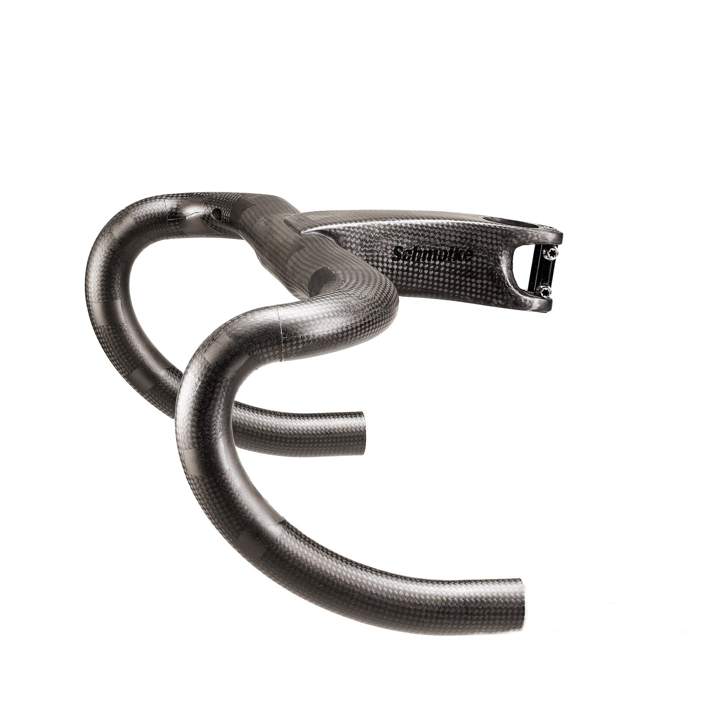


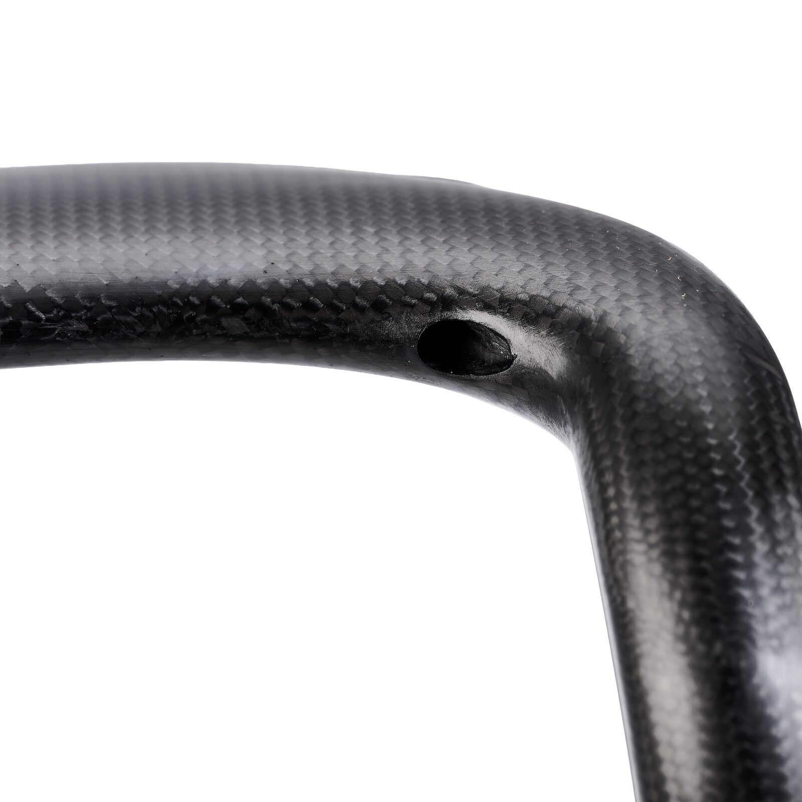
Roadbar Evo TLO · TLO Stem1K · UD、シュモルケ · ブラック · ホワイトエディション


TLO Stem
TLOステムは長さ80、100、110、120mm、角度±6°、ハンドルクランプ31.8mm、コラム1-1/8インチです。100mmで86g、ボルトはM4チタン。塗装しない1Kカーボンのまま仕上げます。
すべての長さに内装ケーブル穴があり、80mmはロードだけでなくグラベルとMTBにも承認されています。100〜120mmはロード専用です。コラムクランプの高さは40mmです。

Roadbar Cockpit Aero TLO
コックピット・エアロTLOは6°フレアで風を受けにくく、それでいて低すぎない姿勢を作ります。ドロップ前側をほぼ水平に整え、フードを握ったとき手首がブレーキレバーと一直線になります。
ステム長100、110、120mm、スタック40mm、角度-6°。ハンドルとステムが一体なので、ケーブルをハンドルに別途通す必要がありません。
03
Seatpost
Seatpost TLO · SLUp to 23 layers
シュモルケのシートポストは、軽さと同じくらいしなやかさで知られています。2012年、ドイツRennRad誌のコンフォートシートポスト比較でTLOとSLが最大のしなりでテスト優勝し、2022年のRoadbike誌カーボンシートポストテストでも1位になりました。
荷重の大きい部分に最大23層、小さい部分に7層を重ね、前後にはやわらかくしなりつつ、左右とねじれの剛性は保ちます。ヘッドはサドルレールを4点で固定し、丸レールと8 x 12mmまでのオーバルカーボンレールをアダプターなしで挟みます。内部にはDi2バッテリーが収まります。
シュモルケの基準となるシートポスト。1KとUDの織り、3つのロゴエディションから選べます。UDは1Kより数グラム重くなります。
10mmセットバックのTLO。同じ積層でヘッドだけを後ろに移し、サドルを少し後ろに置きたいライダーに向いています。
TLOと同じ方法で手巻きしたSLライン。6mmチタンボルト、1Kの織り、レッドとホワイトのロゴで仕上げます。
Seatpost TLO · TLO Setback · SL無塗装マットエポキシ


シートポストは、フレームの上に出る長さ（フレーム上端からサドルレール中央まで）を測って長さを選びます。たとえば170mm出るなら280mmのポストが合います。部位ごとに肉厚が異なるため、シュモルケのシートポストはカットせず、長いものを買って切り詰めることもできません。
04
Saddle
TLO 55 · SL 79 · SL 99 · SL 109Full carbon, one piece
TLO 55はシェル、フレーム、レールまで一体のカーボンで作ったサドルです。重さは名前のとおり55g。クッションの代わりにカーボンシェルがしなって体を支えます。ドイツTOUR誌はTLOサドルのテストで、シェル中央と両翼が目に見えてしなり、見た目以上に快適だと評価しました。
SL 79は幅130mmで、ロード、グラベル、クロスカントリーまで使える3Kカーボンサドルです。SL 99とSL 109はカーボンシェルにレザーまたはノンレザーのカバーを加え、軽さとともに少しのクッションを求めるライダーのためのモデルです。
フレームとレールが一体のフルカーボンサドル。ブラックエディション、チームエディション、レッド · ホワイトの3種類です。
少し広く長い3Kカーボンサドル。ロングライドやグラベルでも、TLOシートポストと合わせて最も軽い組み合わせになります。
カーボンシェルにレザー（SL 99、SL 109）またはノンレザー（SL 109）のカバーをかけたサドル。シュモルケのサドルで最もやわらかいモデルです。
TLO 55 · SL 79 · SL 99ブラック · チーム · レッドホワイトエディション


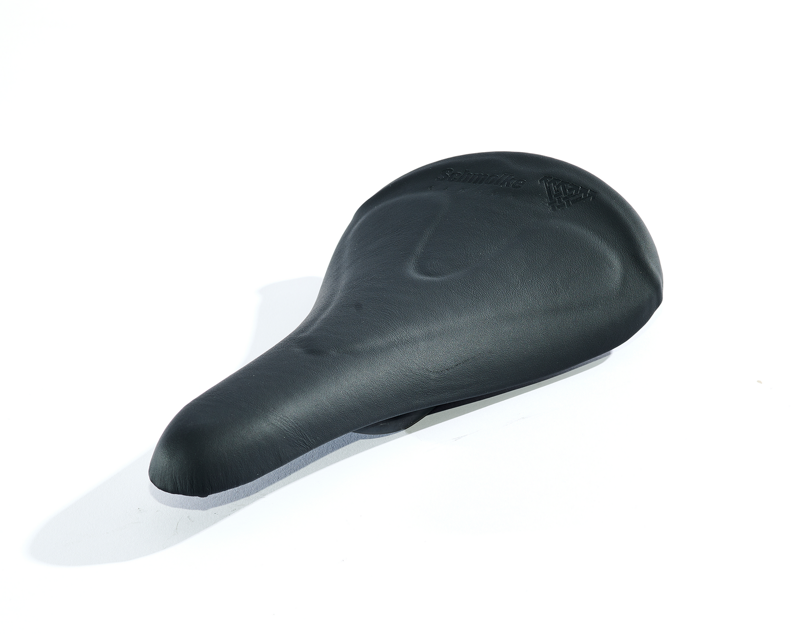
05
Wheels
TLO 37 · TLO 50 · TLO GravelCarbon rims, carbon spokes
シュモルケのホイールは複雑な一体成形ではなく、非常に軽いパーツをひとつずつ手で組む伝統的な方法で作られます。円形に織ったプリプレグを薄く手で積層したリムに、チタンのエンドピースを付けたカーボンスポーク24本と、エクストラライト（Extralite）またはノンプラス（NONPLUS）のハブを組み合わせます。
第2世代のTLO 37は前後840gの登坂向けホイールで、Roadbike誌のテストで1位になりました。TLO 50は50mmリムで940gを記録し、BikeRadarがこれまでで最も軽い50mmホイールと評しました。グラベル用には1本2.2gのテキスタイルスポークを使ったTLOグラベル PI ROPEがあります。


第2世代のTLO 37。内幅25mmのフック付き非対称リムで25〜32mmのタイヤに合い、チューブレスで使います。DTスイス180ハブでは970gです。
T1100カーボンリムとカーボンスポークの50mmホイール。28〜40mmのタイヤに対応し、スチールのエアロスポークも選べます。
高強度ポリエステルのPI ROPEスポークで組んだグラベルホイール。推奨タイヤは40〜45mm、スポークの色は11色から選べます。
TLO 37 · TLO 50 · DetailsUDカーボン、ブラックまたはホワイトロゴ
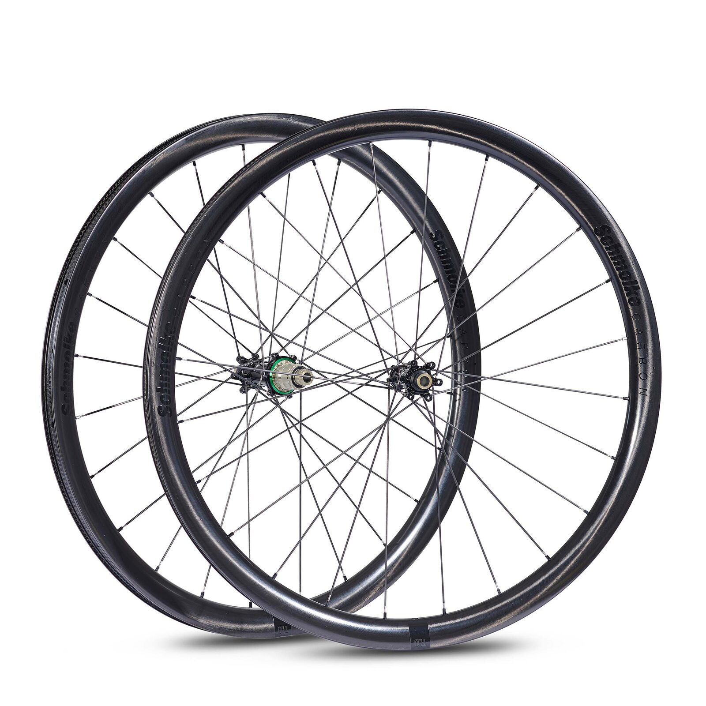
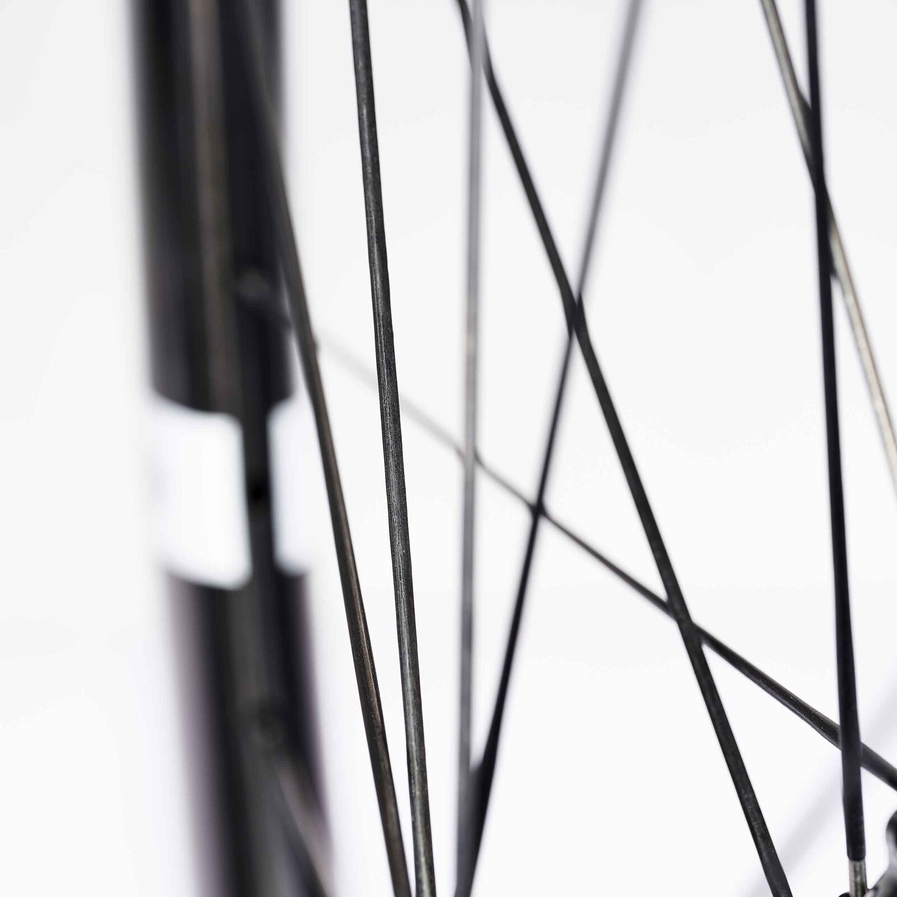


すべてのホイールはディスクブレーキ、前100mm · 後142mmの12mmスルーアクスル規格で、フリーハブはシマノHG、スラムXDR、カンパニョーロから選びます。注文後にドイツで手組みするため仕様により納期が異なります。事前にルビワークショップへお問い合わせください。
06
Folding Bike
Lowriser · Seatpost · 16 inch RimFor Brompton T Line
シュモルケはフォールディングバイク用のカーボンパーツも作っています。ブロンプトンTライン用のTLOローライザーは15mmライズ、6°スイープ、幅560〜600mmで80〜95g。両端をそれぞれ10mmまでカットして合わせられます。
フォールディングバイクはシートポストが長く露出するぶん、重さの差も大きくなります。長さ500〜600mmのTLOフォールディング用シートポストは31.8 x 600mmで159g、一般的なスチール製より重さを最大半分まで減らします。16インチTLOカーボンリムは185gです。

Minivelo · Folding
ミニベロやフォールディングバイクは車輪が小さいぶん、ハンドルとシートポストの比重が大きくなります。シュモルケのローライザーと長いカーボンシートポストは、毎日たたんで持ち上げる重さを目に見えて減らします。
フォールディングバイクはモデルごとにシートポスト径とスリーブ規格が異なるため、ルビワークショップで自転車に合う径と長さをまず確認します。
Folding Bike Parts1K · UD、ブラック · チームエディション
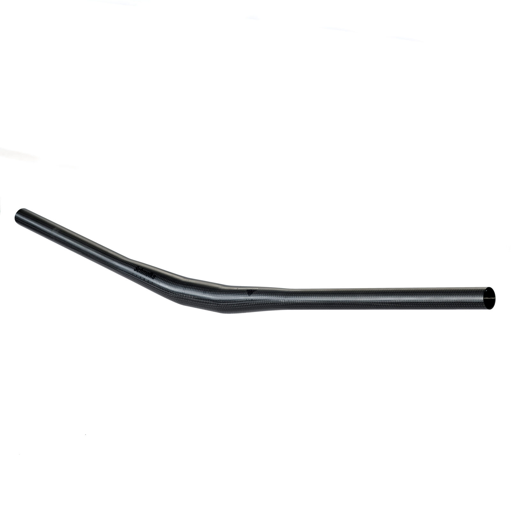


Small Partsボトルケージ、カーボンボルト、バープラグ


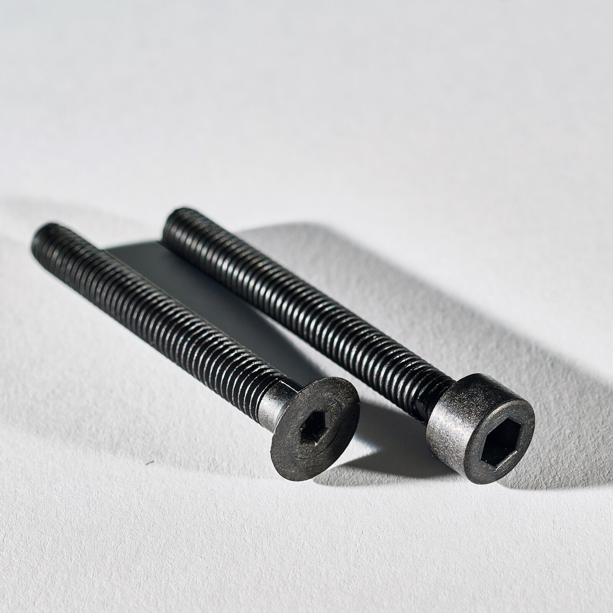

07
Fit Guide
ハンドルバーは幅とリーチ、ドロップを、シートポストは径とフレームから出る長さを、ホイールはタイヤ幅と許容総重量をまず確認してください。数値はシュモルケ公式仕様に基づき、重量はメーカー公表値です。
Handlebars幅は外側から外側
| モデル | 重量 | 幅 | リーチ | ドロップ | フレア | ステム | 最大荷重 |
|---|---|---|---|---|---|---|---|
| Roadbar Evo TLO | 130 ~ 150g | 400 / 420 / 440mm | 73 / 78mm | 125 / 126mm | - | 別体ステム | 110kg |
| Roadbar Cockpit TLO | 222g (420 x 100) | 400 / 420 / 440mm | 73 / 78mm | 125 / 126mm | 6° | 90 / 100 / 110mm, -6° | 110kg |
| Roadbar Cockpit Aero TLO | 250g (420 x 100) | 380 / 400 / 420mm | 77mm | 119mm | 6° | 100 / 110 / 120mm, -6° | 110kg |
Seatposts重量は表示サイズ
| モデル | 重量 | 径 | 長さ | セットバック | サドルレール | 最大体重 |
|---|---|---|---|---|---|---|
| Seatpost TLO | 95g (27.2 x 350) | 27.2 / 30.9 / 31.6 / 34.9mm | ロード 200〜350mm、グラベル · MTB 250〜450mm | 0mm | 丸型、オーバル8 x 12mmまで | 110kg |
| Seatpost TLO Setback | 110g (27.2 x 350) | 27.2 / 30.9 / 31.6 / 34.9mm | ロード 200〜350mm、グラベル · MTB 250〜450mm | 10mm | 丸型、オーバル8 x 12mmまで | 110kg |
| Seatpost SL | 105g (27.2 x 350) | 27.2 / 30.9 / 31.6 / 34.9mm | ロード 200〜350mm、グラベル · MTB 300〜450mm | - | 丸型、オーバル8 x 12mmまで | 110kg |
| Seatpost TLO フォールディングバイク用 | 159g (31.8 x 600) | 31.8 / 34.9mm | 500 / 550 / 600mm | - | 丸型、オーバル8 x 12mmまで | 体重に合わせて製作 |
Wheelsetsリム幅は内 / 外
| モデル | 重量 | リム高 | リム幅 | スポーク | ハブ | 最大総重量 |
|---|---|---|---|---|---|---|
| TLO 37 TLR Disc 2nd Gen. | 840g | 37mm | 25 / 32.5mm | カーボン24本 | Extralite、NONPLUS（DT Swiss 180は970g） | 100kg |
| TLO 50 TLR Disc | 940g | 50mm | 25 / 32.5mm | カーボン24本 | Extralite、NONPLUS（DT Swiss 180は1,025g） | 115kg |
| TLO Gravel PI ROPE | 1,170g | 35mm | 25 / 31mm | PI ROPEテキスタイル24本 | NONPLUS センターロック | 110kg |
シュモルケのパーツはライダーの体重と使用環境を基準に設計されています。許容体重や総重量を超える場合、またカーボンパーツを締め付ける際は、必ずトルクレンチとカーボンペーストを使うショップでの取り付けをおすすめします。ルビワークショップでフレーム規格と体重を確認し、ハンドル、シートポスト、サドル、ホイールの組み合わせを一緒に合わせます。
08
Story
1989 ~ 2026Konstanz, Germany
ひとりの工学生の卒業論文から生まれたカーボンハンドルバーはツール・ド・フランスの表彰台に上り、30年余り後には5.4kgの完成車になりました。シュモルケは新しい試作品を頻繁に発表するよりも、作った製品をすばやく届け、一つひとつの注文に心を込めるやり方を守ってきました。
卒業を控えたシュテファン・シュモルケが兄とハイエンド自転車店を開き、新素材とカーボン製レーシングハンドルバーの理論を卒業論文として書きます。
論文の翌年、実際に乗れる最初のカーボンロードハンドルバーを作ります。
ハンドルバーの注文が生産能力を超え、コンスタンツでシュモルケ・カーボンを設立します。
ヤン・ウルリッヒがシュモルケのハンドルバーでツール・ド・フランス総合2位に。品質試験でカーボンバーはアルミより硬く、軽いことが示されました。
RennRad誌のコンフォートシートポスト比較テストで、TLOとSLが最大のしなりと軽さで優勝します。
同じドイツのカーボンコンポーネントメーカーTHMと歩みをともにし始めます。両社はそれぞれの工場とチームを独立して運営しています。
30周年を迎え、カーボンフレームと完成車を発表します。エアロウ（Aerrow）とグラベルバイクのインフィニティ（Infinity）がここから始まります。
完成車5.4kgのレッジェリッシマTLOが、ドイツTOUR誌のテストで最も軽いロードバイクとして記録されます。
ハンドルバーとステムをひとつにしたロードバー・コックピットTLOとコックピット・エアロTLOを発表します。


Glossary
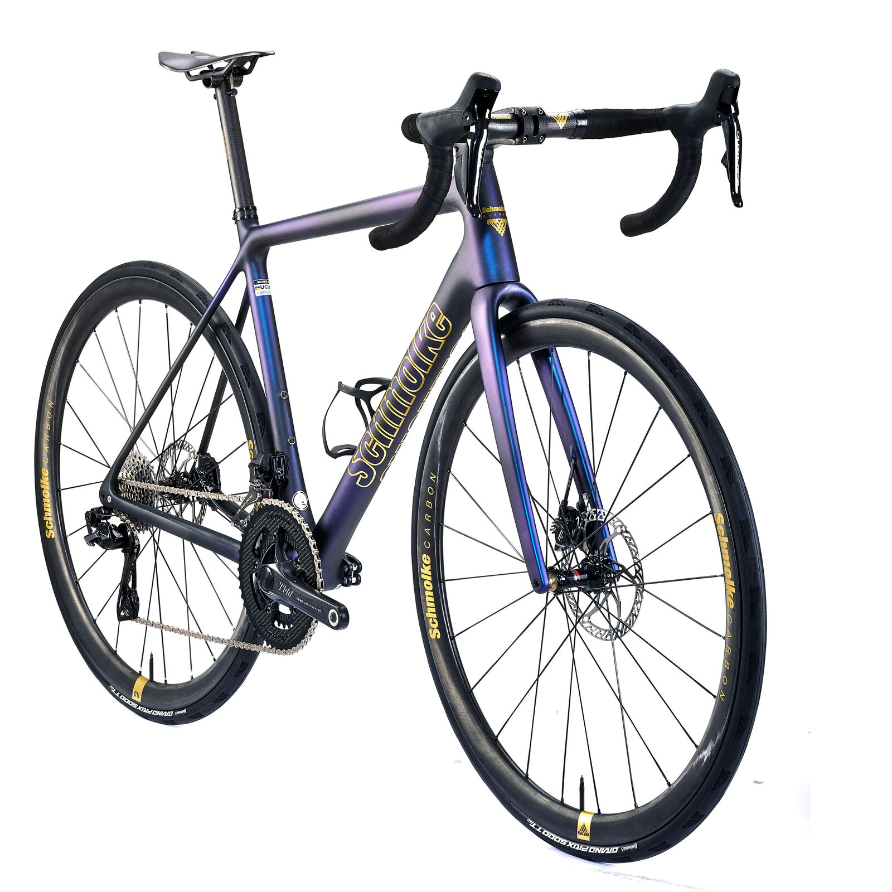

09 · Showroom
カーボンパーツの軽さは手に取ってこそ実感できます。ルビワークショップでシュモルケのパーツを実際に見て、フレーム規格や体重、ライディングスタイルに合う構成を一緒に決めます。多くの製品は注文後にドイツで作られるため、サイズや仕上げ、納期は事前にご相談ください。カスタムビルドのご相談も承ります。
For Dealers
シュモルケの韓国公式ディストリビューターはルビカンパニーです。店舗での取り扱いや取引条件は、ルビカンパニーのB2Bチャンネルであるルビサプライへお問い合わせください。